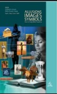
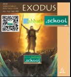
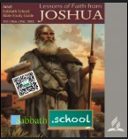

This Year’s Sabbath School Quarterly Themes (2025)
Study God's Word with us each quarter. Click below to read lessons online or download PDFs from trusted SDA sources.
Q1 2025: God’s Love and Justice
Discover how God's character blends mercy and righteousness in perfect harmony.
View Lessons

Q2 2025: Allusions, Images, and Symbols
Understand how the Bible uses symbolism and imagery to reveal deep spiritual truths.
View Lessons

Q3 2025: Exodus – Journey to the Promised Land
Experience God’s faithfulness as He leads His people from bondage to freedom.
View Lessons

Q4 2025: Lessons of Faith from Joshua
Learn from Joshua’s courage, obedience, and unwavering trust in God’s promises.
View Lessons